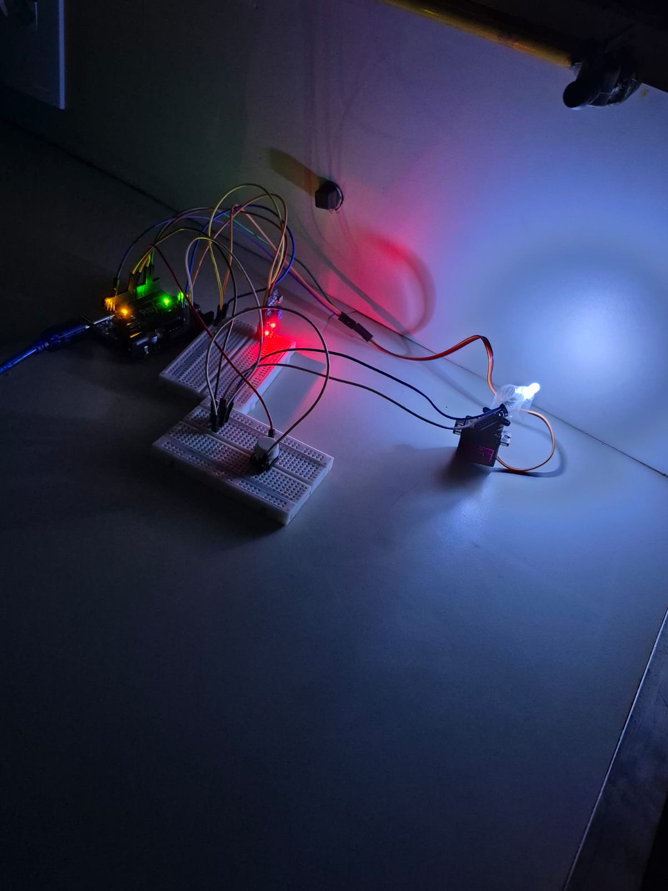
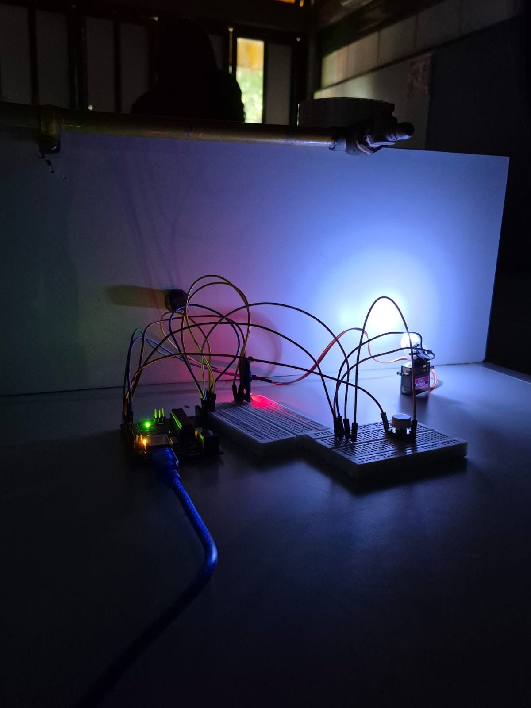

Experimento do LDR e do LED

O LDR é um sensor que detecta a intensidade da luz no ambiente. Neste experimento, fixamos um LED em um servomotor e o movimentamos em diferentes ângulos. Assim, pudemos observar como a posição do LED e a luminosidade detectada pelo LDR variavam durante o movimento.